基本维修提示
操作提示
| 1 | 着装 | ·
务必身着清洁的工作服。 ·
必须戴好帽子，穿好安全鞋。 |
| 2 | 车辆保护 | 开始工作前，准备好散热器格栅罩、翼子板保护罩、座椅护面及地板垫。 |
| 3 | 安全操作 | ·
与两个或两个以上人员一起工作时，务必要相互检查安全情况。 ·
在发动机运转的情况下进行工作时，要确保修理车间中具备通风装置，以排出废气。 ·
维修高温、高压、旋转、移动或振动的零件时，一定要佩戴适当的安全设备，并且要格外小心不要使自己或他人受到伤害。 ·
顶起车辆时，务必使用安全底座支撑车辆的规定部位。 ·
举升车辆时，使用适当的安全设备。 |
| 4 | 准备工具和测量设备 | 开始工作前，准备好工具台、SST、测量设备、机油和全部所需更换零件。 |
| 5 | 拆卸和安装、拆解和装配操作 | ·
在充分了解正确的维修程序和报修故障之后，对故障进行诊断。 ·
拆卸任何零件前，都要检查总成的总体状况以确认是否变形或损坏。 ·
如果程序复杂，要做记录。例如，记录拆下的电气连接、螺栓或软管的总数。加上装配标记，以确保将各零部件重新装配到其原来位置。如有必要，可暂时对软管及其管接头作标记。 ·
如有必要，清洗拆下的零件，彻底检查后，再装配这些零件。 |
| 6 | 拆下的零件 | ·
应将拆下的零件放在一个单独的盒子内，以免与新零件混淆或弄脏新零件。 ·
对于不可重复使用的零件（如衬垫、O 形圈和自锁螺母等），要按照本手册中的说明用新件进行更换。 ·
如客户要求，则保留拆下的零件以备客户检查。 |
| 7* | 完成工作后进行的检查 | ·
确保拆下和安装的零件（机油加注口盖、机油油位计、地板垫等）正确安装/紧固。 ·
确保使用的布或工具未留在发动机室内或车内。 ·
检查并确认无机油泄漏。 |
*：务必正确进行这些检查，完成工作后，未正确进行这些检查会导致严重事故或伤害。
顶起和支撑车辆
顶起和支撑车辆时一定要小心。一定要在正确的位置顶起和支撑车辆。
| *a | 密封锁止胶 |
预涂零件
预涂零件是指在工厂中就涂以密封锁止胶的螺栓和螺母。
如果预涂零件被重新拧紧、拧松或以任何方式移动，则必须使用规定的锁止胶再涂一次。
再次使用预涂零件时，一定要清除旧的锁止胶，并用压缩空气吹干零件。然后将适量的新密封锁止胶涂抹在该零件上。
一些密封锁止胶固化比较缓慢。您可能必须等待一段时间使密封锁止胶固化。
衬垫
必要时，在衬垫上涂抹密封胶以防泄漏。
螺栓、螺母和螺钉
严格遵守所有关于紧固扭矩的保养规格。务必使用扭矩扳手。
紧固螺栓和螺母时，确保螺栓头和螺母头下部没有存积异物（毛刺、油漆等）。
| *a | 错误 |
| *b | 正确 |
保险丝
检查保险丝时，检查并确认保险丝的金属丝未断开。
如果保险丝的金属丝已断开，则确认电路中没有短路。
更换保险丝时，必须使用额定安培数相同的保险丝。
| 插图 | 符号 | 零件名称 | 缩略语 |
|---|---|---|---|
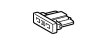
|
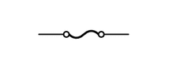
|
保险丝 | FUSE |
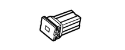
|
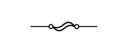
|
中等电流保险丝 | M-FUSE |
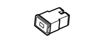
|
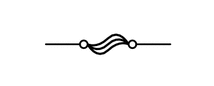
|
大电流保险丝 | H-FUSE |
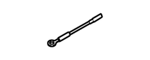
|
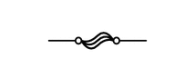
|
熔断丝 | FL |
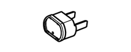
|
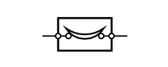
|
断路器 | CB |
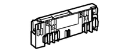
|
熔断丝 | FL |
卡子
车身零件中使用的典型卡子的拆卸和安装方法如下表所示。
如果卡子在操作程序中损坏，则务必用新卡子进行更换。
| 形状（示例） | 拆卸/安装 |
|---|---|
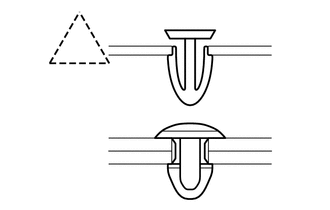
|
用卡子拆卸工具或钳子拆下卡子。
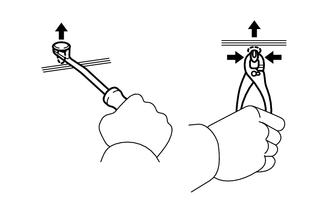
|
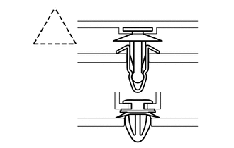
|
使用卡子拆卸工具或头部缠有保护胶带的螺丝刀拆下卡子。
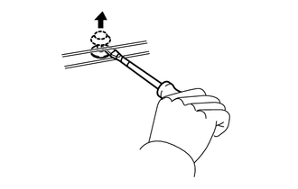
|
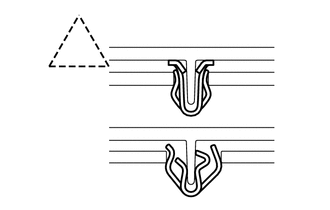
|
用宽刮刀拆下卡子以免损坏面板。
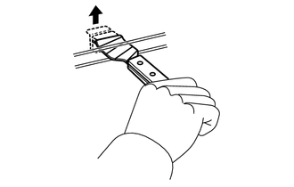
|
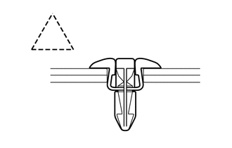
|
通过推入销轴并起出销壳来拆下卡子。
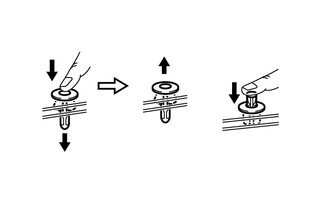
|
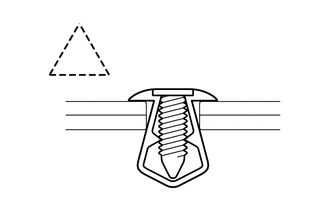
|
通过拧松销轴并撬开销壳来拆下卡子。
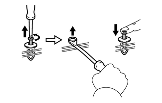
|
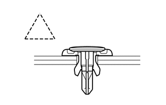
|
通过使用头部缠有保护胶带的螺丝刀撬出销，然后撬出销壳来拆下卡子。
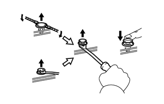
|
卡爪
车身零件中使用的典型卡爪的拆卸和安装方法如下表所示。
如果卡爪在操作程序中损坏，则务必用新盖或新罩进行更换。
| 形状（示例） | 插图/程序 |
|---|---|
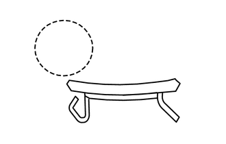
|
使用头部缠有保护胶带的螺丝刀，分离卡爪以拆下盖或罩。
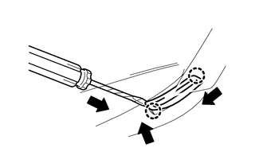
|
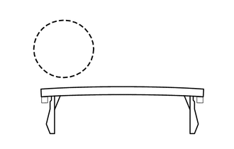
|
使用头部缠有保护胶带的螺丝刀，分离卡爪以拆下盖或罩。
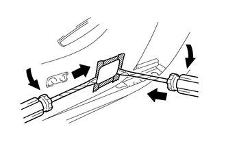
|
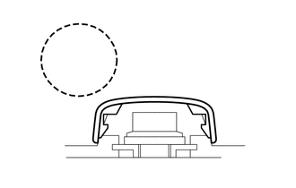
|
使用头部缠有保护胶带的螺丝刀，分离卡爪以拆下盖或罩。
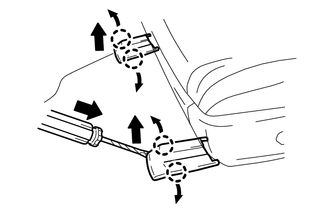
|
铰链、导管、卡夹、销等
车身零件中使用的典型铰链、导管、卡夹和销的拆卸和安装方法如下表所示。
如果卡夹在操作程序中损坏，则务必用新盖或新罩进行更换。
| 形状（示例） | 拆卸/安装 |
|---|---|
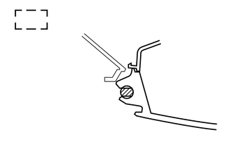
|
从销中拔出使其分离。
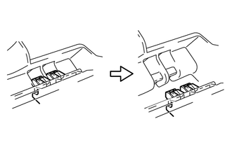
|
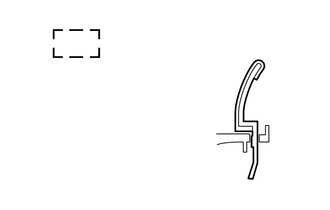
|
通过拉拔将销分离。
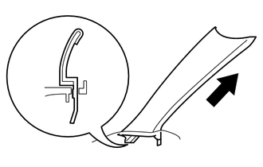
|
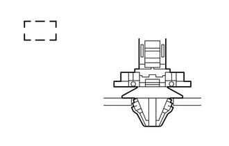
|
使用钳子拆下卡夹。
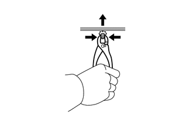
|
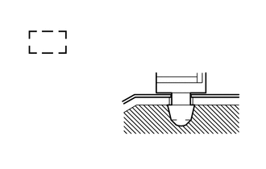
|
通过拉拔将销分离。
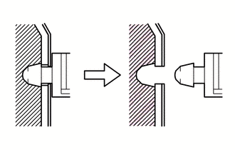
|
真空软管的拆卸和安装
| *a | 错误 |
| *b | 正确 |
要断开真空软管，应拉拔并扭曲软管末端。不要拉拔软管的中间部位，否则可能导致软管损坏。
断开真空软管时，应使用标签标识其应重新连接的位置。
完成任何有关软管的维修后，再次检查并确认真空软管连接正确。发动机罩下的标签显示了正确的连接部位。
使用真空表时，切勿强行将软管插接到尺寸过大的连接器上。如果软管被拉伸，则可能会造成空气泄漏。如有必要，应使用口径逐步缩小的转换接头。
扭矩扳手与加长工具配合使用时的扭矩
利用下面的公式计算 SST 或加长工具与扭矩扳手配合使用时的专用扭矩值。
T' = (L2/(L1 + L2))*T
| T' | 扭矩扳手的读数 (N*m (kgf*cm, ft.*lbf)) |
| T | 扭矩 (N*m (kgf*cm, ft.*lbf)) |
| L1 | SST 或加长工具的长度 (cm (in.)) |
| L2 | 扭矩扳手的长度 (cm (in.)) |
加长工具或 SST 与扭矩扳手配合使用时，如果将其用于紧固至本手册中规定的扭矩规格，则实际扭矩将过大，零件将损坏。
对于配备 SRS 空气囊和座椅安全带预紧器的车辆
车辆配备有辅助乘员保护系统 (SRS)。
报废前展开任一 SRS 零件，检查并严格遵循所有相应的环境与危险材料法规。报废前展开 SRS 零部件可视为危险材料处理。
如果未按正确的顺序进行维修操作，则可能会导致维修过程中 SRS 意外展开，并造成严重的人身伤害。此外，如果在 SRS 维修过程中出现错误，则可能会造成 SRS 无法正常工作。维修前（包括零件的拆卸或安装、检查或更换），必须认真阅读以下内容。
一般注意事项
SRS 的故障难以确认，因此诊断故障码 (DTC) 就成为故障排除时最重要的信息源。对 SRS 进行故障排除时，务必在断开蓄电池前检查 DTC。
必须在点火开关置于 OFF 位置，断开蓄电池负极 (-) 端子电缆至少 90 秒后，才能开始工作。
SRS 配备有备用电源。如果在将点火开关置于 OFF 位置并断开蓄电池负极 (-) 端子电缆后 90 秒内就开始工作，则 SRS 可能会展开。
断开蓄电池负极 (-) 端子电缆时，时钟和音响系统的存储内容将被清除。开始操作前，要记下各存储系统的设定。操作完成后，将时钟和音响系统重新设定为先前的状态。
切勿使用备用电源（蓄电池或其他电源）以避免清除存储系统中的存储内容。备用电源可能会对 SRS 意外供电，并导致其展开。
如果发生了轻微碰撞而 SRS 未展开，则在继续使用车辆前，应检查方向盘衬垫、前排乘客空气囊总成、座椅侧空气囊总成、帘式空气囊总成和座椅外安全带总成。
切勿使用其他车辆上的 SRS 零件。更换零件时，请使用新零件。
如果在维修过程中可能会碰撞到空气囊传感器，则应在进行维修前拆下空气囊传感器总成。
切勿拆解并试图维修任何空气囊传感器总成或空气囊总成。
方向盘衬垫
前排乘客空气囊总成
座椅侧空气囊总成
帘式空气囊总成
座椅外安全带总成
如果出现以下两种情况，则更换空气囊传感器总成和空气囊总成：1) 由于掉落造成损坏，或 2) 在壳体、支架或连接器上出现破裂、凹痕或其他缺陷。
不要使空气囊传感器总成或空气囊总成直接暴露于热空气或明火中。
使用高阻抗（最小 = 10 kΩ）的电压表/欧姆表对电路进行故障排除。
SRS 零部件上贴有信息标签。应遵循标签上的说明。
完成对 SRS 的操作后，检查 SRS 警告灯。
螺旋电缆
方向盘必须正确安装到转向柱上，使螺旋电缆处于中立位置。否则可能会造成电缆损坏和其他故障。请参考有关正确安装方向盘的信息。
单击此处 车辆内饰>辅助乘员保护系统>螺旋电缆>安装201406,999999,_58,_024009,_0116303,RM100000000D961,
方向盘衬垫
务必将拆下的或新的方向盘衬垫的展开面朝上放置。方向盘衬垫的展开面朝下放置时，如果空气囊展开，可能导致严重事故。另外，不要在方向盘衬垫的顶部放置任何物品。。
切勿测量空气囊点火管的电阻。否则可能会使空气囊展开，从而导致严重伤害。
严禁在方向盘衬垫上涂抹任何种类的润滑脂或去垢剂。
将方向盘衬垫存放在环境温度低于 93°C (199°F)、湿度不大且无电噪干扰的地方。
在车辆的任何部位使用电焊时，都要断开中央空气囊传感器总成连接器。这些连接器内含有短接弹簧。能够降低由于电流进入点火管导线而展开空气囊的可能性。
报废车辆或仅报废方向盘衬垫时，应在报废前使用 SST 将空气囊展开。在远离电噪干扰的安全地点展开空气囊。
单击此处 车辆内饰>辅助乘员保护系统>方向盘衬垫>报废201406,999999,_58,_024009,_0116302,RM100000000D960,
前排乘客空气囊总成
务必将拆下的或新的前排乘客空气囊总成的展开面朝上放置。空气囊总成的展开面朝下放置时，如果空气囊展开，可能导致严重事故。
切勿测量空气囊点火管的电阻。否则可能会使空气囊展开，从而导致严重伤害。
严禁在前排乘客空气囊总成上涂抹任何种类的润滑脂或去垢剂。
将前排乘客空气囊总成存放在环境温度低于 93°C (199°F)、湿度不大且无电噪干扰的地方。
在车辆的任何部位使用电焊时，都要断开中央空气囊传感器总成连接器。这些连接器内含有短接弹簧。能够降低由于电流进入点火管导线而展开空气囊的可能性。
报废车辆或仅报废前排乘客空气囊总成时，应在报废前使用 SST 将空气囊展开。在远离电噪干扰的安全地点展开空气囊。
单击此处 车辆内饰>辅助乘员保护系统>前排乘客空气囊总成>报废201406,999999,_58,_024009,_0116304,RM100000000D965,
座椅侧空气囊总成
务必将拆下的或新的座椅侧空气囊总成的展开面朝上放置。
切勿测量空气囊点火管的电阻。否则可能会使空气囊展开，从而导致严重伤害。
严禁在座椅侧空气囊总成上涂抹任何种类的润滑脂或去垢剂。
将座椅侧空气囊总成存放在环境温度低于 93°C (199°F)、湿度不大且无电噪干扰的地方。
在车辆的任何部位使用电焊时，都要断开中央空气囊传感器总成连接器。这些连接器内含有短接弹簧。能够降低由于电流进入点火管导线而展开空气囊的可能性。
报废车辆或仅报废座椅侧空气囊总成时，应在报废前使用 SST 将空气囊展开。在远离电噪干扰的安全地点展开空气囊。
单击此处 车辆内饰>辅助乘员保护系统>前排座椅侧空气囊总成>报废201406,999999,_58,_024009,_0116310,RM100000000D96V,
帘式空气囊总成
务必将拆下的或新的帘式空气囊总成放置在干净的塑料袋内，并将其存放于安全地点。
使用后应将塑料袋报废处理。
切勿拆解帘式空气囊总成。
切勿测量空气囊点火管的电阻。否则可能会使空气囊展开，从而导致严重伤害。
严禁在帘式空气囊总成上涂抹任何种类的润滑脂或去垢剂。
将帘式空气囊总成存放在环境温度低于 93°C (199°F)、湿度不大且无电噪干扰的地方。
在车辆的任何部位使用电焊时，都要断开中央空气囊传感器总成连接器。这些连接器内含有短接弹簧。能够降低由于电流进入点火管导线而展开空气囊的可能性。
报废车辆或仅报废帘式空气囊总成时，应在报废前使用 SST 将空气囊展开。在远离电噪干扰的安全地点展开空气囊。
单击此处 车辆内饰>辅助乘员保护系统>帘式空气囊总成>报废201406,999999,_58,_024009,_0116305,RM100000000D96E,
座椅外安全带总成（座椅安全带预紧器）
切勿测量座椅外安全带总成的电阻。这可能激活座椅外安全带总成预紧器，从而导致严重伤害。
切勿拆解座椅外安全带总成。
切勿将座椅外安全带总成安装到其他车辆上。
将座椅外安全带总成存放在环境温度低于 80°C (176°F)、湿度不大且无电噪干扰的地方。
在车辆的任何部位使用电焊时，都要断开中央空气囊传感器总成连接器。这些连接器内含有短接弹簧。能够降低由于电流进入点火管导线而展开空气囊的可能性。
报废车辆或仅报废座椅外安全带总成时，应在报废前激活座椅外安全带总成。在远离电噪干扰的安全地点激活座椅外安全带总成。
单击此处 车辆内饰>座椅安全带>前排座椅外安全带总成>报废201406,999999,_58,_024011,_0116722,RM100000000DB6L,
预紧器激活后座椅外安全带总成会发热，因此报废前应预留一段时间使其充分冷却。切勿用水来冷却座椅外安全带总成。
不应在座椅外安全带总成上涂抹润滑脂、去垢剂、油或水。
中央空气囊传感器总成
SRS 在碰撞中已经展开时，切勿再次使用其中的中央空气囊传感器总成。
应在中央空气囊传感器总成安装在车辆上的情况下连接或断开传感器连接器。如果在中央空气囊传感器总成未安装的情况下连接或断开连接器，则 SRS 可能会激活。
即使只是拧松中央空气囊传感器总成的螺栓，也必须在将点火开关置于 OFF 位置并断开蓄电池负极 (-) 端子电缆至少 90 秒后，才能开始工作。
线束和连接器
本系统中所有的连接器均为标准黄色。如果 SRS 线束开路或连接器损坏，则将其更换。
电子控制
| *1 | 电缆 |
| *2 | 蓄电池负极 (-) 端子 |
断开并重新连接蓄电池负极 (-) 端子电缆后，某些系统需要初始化。
起动发动机前，确保用螺栓将接地点安装到车身上。
将点火开关置于 OFF 位置后，无线电收音机和显示屏接收器总成记录不同类型的存储和设置。 因此，将点火开关置于 OFF 位置后，断开蓄电池负极 (-) 端子电缆前，确保至少等待 90 秒。 （无线电收音机和显示屏型）
将点火开关置于 OFF 位置后，导航接收器总成记录不同类型的存储和设置。 因此，将点火开关置于 OFF 位置后，断开蓄电池负极 (-) 端子电缆前，确保至少等待 120 秒。 （导航接收器型）
断开并重新连接蓄电池负极电缆
对电子部件进行操作前，断开蓄电池负极 (-) 端子电缆以防止损坏电气系统或零部件。
断开电缆时，将点火开关置于 OFF 位置，关闭大灯开关，并完全松开电缆螺母。进行这些操作时，不得扭曲或撬动电缆。然后断开电缆。
断开蓄电池负极 (-) 端子电缆时，时钟设置、无线电收音机设置、音响系统的存储内容、DTC 和其他数据都将被清除。应在断开电缆前记下必要的数据。
| *a | 错误 |
电子零件的处理
除非绝对必要，否则不要打开 ECU 盖或壳体。如果触碰到集成电路端子，则集成电路可能会因静电产生故障。
断开电子连接器时，不要拉拔线束。应拉拔连接器本身。
不要让传感器或继电器等电子部件掉落。如果它们掉落到坚硬的表面上，则应予以更换。
用蒸汽清洁发动机零部件时，应防止电子部件、空气滤清器以及与排放相关的零部件进水。
切勿使用冲击扳手拆卸或安装温度开关或温度传感器。
测量线束连接器端子间的电阻时，应小心插入检测仪探针以防止端子弯曲。
燃油控制零件的拆卸和安装
拆卸和安装燃油系统零件的场所
选择通风良好且周围无焊机、研磨机、钻孔机、马达、火炉或其他任何点火源的位置操作。
切勿在坑道中或坑道附近操作，因为燃油蒸汽会在那里聚集。
拆卸和安装燃油系统零件
开始工作前请准备好一个灭火器。
为防止静电，应在换油器和车辆之间安装接地线，不要在周围区域喷水。在该区域进行操作时务必要小心，因为地板表面会变得很滑。不要用水清除溅出的汽油，因为这会导致汽油扩散，并可能会引起火灾。
避免使用马达、工作灯和其他可能产生火花或高温的电气设备。
避免使用铁锤，因为它们可能产生火花。
使用耐火容器单独清理沾有燃油的布。
发动机进气零件的拆卸和安装
任何进入进气系统零件中的金属微粒都可能损坏发动机。
拆卸和安装进气系统零件时，应封住拆下的零件的开口和发动机开口。使用胶带或其他适当的材料。
安装进气系统零件时，检查并确认没有金属微粒进入发动机或安装的零件。
软管卡夹的处理
| *1 | 卡夹压痕 |
| *2 | 弹簧式卡夹 |
拆下软管前，检查卡夹的位置，以便能够将其重新安装在同一位置。
用新件更换变形的或有凹痕的卡夹。
重新使用软管时，将卡夹固定在软管的卡夹压痕部位。
对于弹簧式卡夹，通过沿如图所示的箭头方向推凸耳，即可在安装后略微展开凸耳。
配备移动通信系统的车辆
天线的安装位置应尽可能远离车辆电子系统的 ECU 和传感器。
天线和馈线的安装位置与车辆电子系统的 ECU 和传感器的距离至少应为 20 cm (7.87 in.)。有关 ECU 和传感器位置的详细信息，请参考相应零部件的章节内容。
将天线和馈线与其他配线尽可能远地分开。这样可以防止通信设备与车辆设备的信号相互影响。
检查并确认天线和馈线已正确调节。
不要安装大功率移动通信系统。
大灯的检查或保养
| *a | 遮盖时禁止点亮 3 分钟或更长时间 |
大灯点亮时，遮盖它的时间不要超过 3 分钟。
由于大灯外透镜是由树脂制成的，过长时间遮盖时产生的热量可能会使其变形。
配备牵引力控制 (TRC) 和车辆稳定性控制 (VSC) 系统的车辆
使用诸如车速表检测台、组合式车速表和制动试验台、底盘测功机的二轮滚筒试验台进行测试时，或将前轮顶起并转动车轮时，应执行下列程序以进入检查模式并禁用 TRC 和 VSC 系统。
单击此处 制动>制动控制/动态控制系统>车辆稳定性控制系统>注意事项201406,999999,_54,_023990,_0116082,RM100000000D7ZR,
确保 VSC OFF 指示灯和 TRC OFF 指示灯点亮。
用链条固定车辆，以确保安全。
进行检查后，切勿在未取消检查模式的情况下驾驶车辆。
由于 TRC 和 VSC 的突然操作，车辆可能会意外移出测功机。
按下 VSC OFF 开关（带 VSC OFF 开关的车辆）不能完全禁用 TRC 和 VSC 操作。
牵引前轮驱动车辆的注意事项
应使用以下方法之一牵引车辆。
如果车辆底盘或动力传动系出现故障，则使用方法 1（平板卡车）。
不要使用除上述方法外的任何其他牵引方法。
如果在紧急情况下找不到牵引卡车，则可用拉索或链条将车辆固定至紧急牵引环暂时牵引车辆。该方法仅可在硬化路面上尝试使用，行驶距离应小于 80 km (50 mile) 且以低速行驶。
驾驶员必须在车内进行转向和制动操作。车辆的车轮、动力传动系、车桥、转向和制动系统必须状态良好。
如果牵引距离超过规定限制，或在前轮着地的情况下车辆向后方向牵引，则可能损坏传动桥。
紧急牵引程序
将点火开关置于 ON 位置。
踩下制动踏板并将换档杆移至 N。
解除驻车制动。
缓慢松开制动踏板。
牵引车辆时应非常小心。避免突然起动或不稳定的驾驶操作，因为这样会对紧急牵引环和拉索或链条产生过大的拉力。
不要将点火开关置于 OFF 位置。将点火开关置于 OFF 位置可能会使转向锁接合，从而导致危险或意外事故。
下面所示的牵引方法具有危险性，并可能损坏车辆，因此不要使用。
不要在前轮着地时向后牵引车辆。
如果在前轮着地时向后牵引车辆，则动力传动系可能过热并损坏。
此外，如果车辆配备 VSC 系统，则系统可能会对转动的车轮施加制动。
不要使用吊起式牵引方法从车辆前部或后部进行牵引。
如果采用吊起式拖车，则可能损坏车身。
配备催化转化器的车辆
如果大量未燃烧的汽油或汽油蒸汽进入转化器，则可能会导致转化器过热并引发火灾。为了防止发生这种情况，应遵守以下注意事项：
只能使用无铅汽油。
避免不必要的火花测试。
仅在绝对必要的情况下，才能进行火花测试。应尽快完成该测试。
测试时，除非另有指示，否则切勿高速运转发动机。
避免发动机压缩压力测量时间过长。发动机压缩压力测量必须尽快完成。
燃油箱快空时不要运转发动机。这可能会导致发动机缺火，并对转化器产生额外负载。
点火开关表示法
本车型使用的点火开关类型随车辆规格的不同而有所差异。
本章节使用下表中所列的表示法。
| 表示法 | 点火开关（位置） | 发动机开关（状态） |
|---|---|---|
| 点火开关置于 OFF 位置 | LOCK | 关闭 (LOCK) |
| 点火开关置于 ACC 位置 | ACC | 打开 (ACC) |
| 点火开关置于 ON 位置 | ON | 打开 (IG) |
| 发动机起动 | START | 打开（起动） |